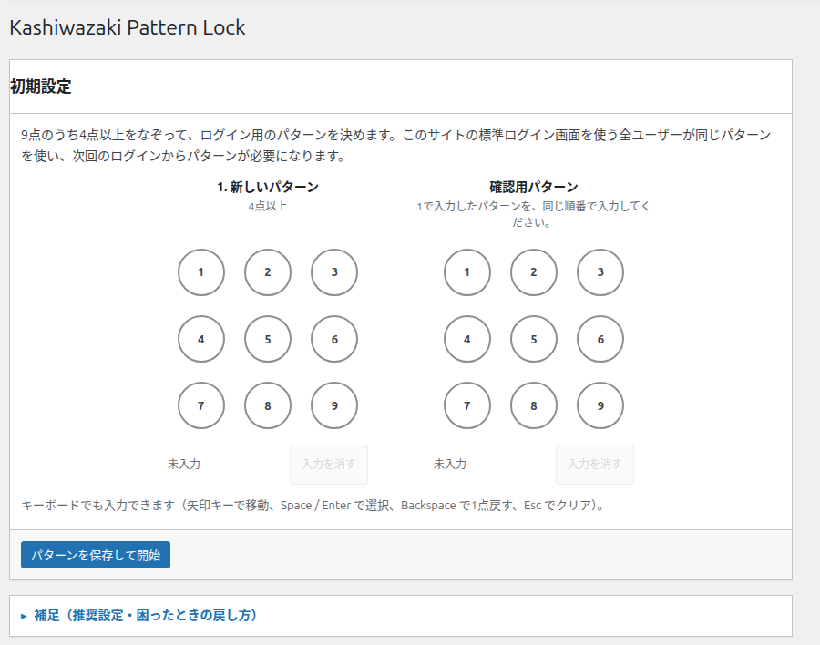
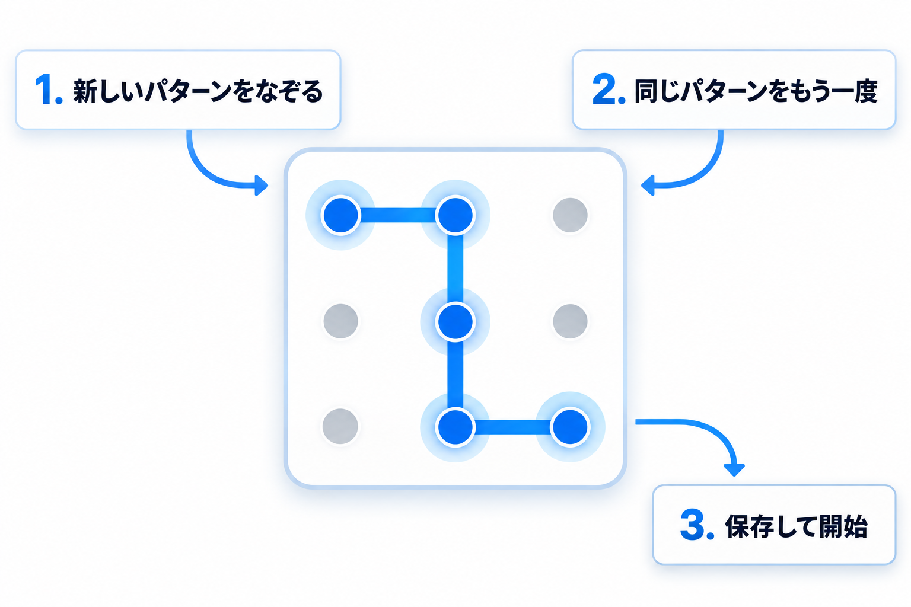
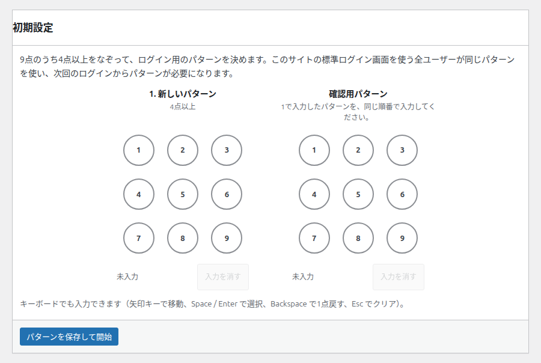
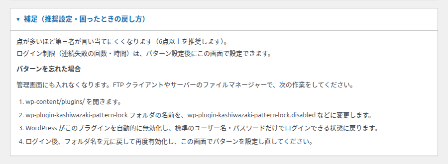
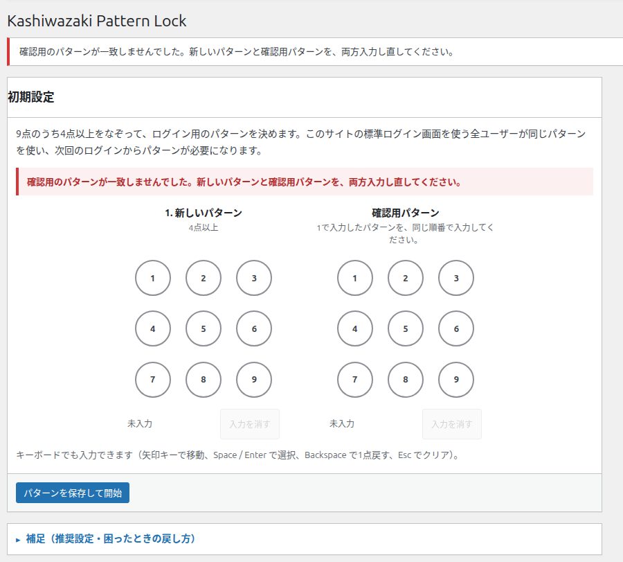

管理画面：初期設定
まだパターンが設定されていないときに表示される画面です。ここでパターンを決めると、次回のログインからパターンが必要になります。


画面の地図
| 部分 | 内容 |
|---|---|
| パネル「初期設定」 | 説明文、2つのパターン入力、キーボードの案内、保存ボタンが入っています。 |
| パネル「補足（推奨設定・困ったときの戻し方）」 | おすすめの設定と、パターンを忘れたときの手順が入っています。クリックで開きます。 |
設定のしかた
-
1
1. 新しいパターン の盤面で、4点以上をなぞります。
-
2
確認用パターン の盤面で、1と同じ順番でもう一度なぞります。
-
3
パターンを保存して開始 を押します。画面が「設定済み」の管理画面に切り替わります。

項目の説明
1. 新しいパターン
これから使うパターンを入力します。盤面の下の「4点以上」は、入力に必要な点数のことです。
- 既定値: 未入力
- 入力できる点数: 4点以上（9点まで）
- 同じ点は1回だけ使えます。
- 飛び越えた点は、途中の点も選ばれたものとして扱われます。
確認用パターン
1で入力したパターンを、同じ順番でもう一度入力します。2つが一致しないと保存できません。
- 既定値: 未入力
- 説明文: 「1で入力したパターンを、同じ順番で入力してください。」
キーボードでも入力できます
盤面の点にフォーカスがあるとき、矢印キーで移動、Space または Enter で選択、Backspace で1点戻す、Esc でクリアできます。
パターンを保存して開始
入力したパターンを保存します。保存すると、次回のログインからパターンが必要になります。
- 取り消し: 保存後に解除できます（パターンの解除）。
- 保存されるのはパターンそのものではなく、照合のための情報です。画面に戻ることはありません。
補足パネル

- 点が多いほど第三者が言い当てにくくなります（6点以上を推奨します）。
- ログイン制限（連続失敗の回数・時間）は、パターン設定後にこの画面で設定できます。
- パターンを忘れた場合: 管理画面にも入れなくなります。サーバーのファイル管理画面や FTP でプラグインのフォルダー名を変えて無効化すると、標準のログインに戻ります。くわしくはトラブルシューティングをご覧ください。
エラーが出たとき

送信前に出るエラー（画面内・入力は残ります）
保存を押したときに、盤面の下へ赤字で出ます。送信は行われず、入力した内容はそのまま残ります。
| メッセージ | 意味 | 対処 |
|---|---|---|
| パターンが入力されていません。点をなぞって入力してください。 | どちらかの盤面が未入力のまま保存を押しました。 | 足りない盤面を入力します。 |
| パターンが短すぎます。4点以上をなぞってください。 | どちらかの盤面が4点未満です。 | 4点以上になるまで点を増やします。 |
保存した後に出るエラー（画面上部とフォーム内）
画面が切り替わるため、2つの盤面はどちらも空に戻ります。新しいパターンと確認用を、両方入力し直してください。
| メッセージ | 意味 | 対処 |
|---|---|---|
| パターンが入力されていません。9点のうち4点以上をなぞって入力してください。 | 新しいパターンが空のまま送信されました。 | 2つの盤面を入力し直します。 |
| パターンが短すぎます。4点以上で入力してください。 | 4点未満のパターンが送信されました。 | 4点以上で入力し直します。 |
| 確認用のパターンが一致しませんでした。新しいパターンと確認用パターンを、両方入力し直してください。 | 2つのパターンが違います。 | 2つとも入力し直します。 |
| パターンを読み取れませんでした。もう一度なぞって入力してください。 | パターンの形が正しく送信されませんでした。 | もう一度なぞり直します（盤面は空に戻っています）。 |
| パターンを保存できませんでした。もう一度お試しください。 | 保存に失敗しました。 | 時間をおいて、もう一度保存します。 |
「入力を消す」が押せないとき
盤面が空のときは、「入力を消す」は押せません。空の盤面に入力し直してください。
保存できたとき
画面上部に「パターンを設定しました。次回のログインからパターンが必要になります。」と表示され、画面が設定済みの管理画面に切り替わります。